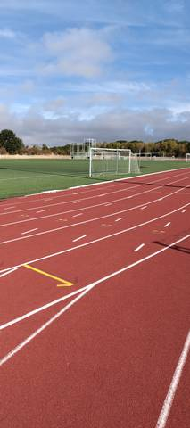
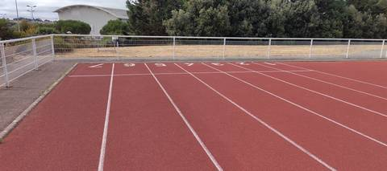
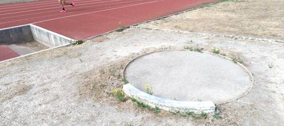
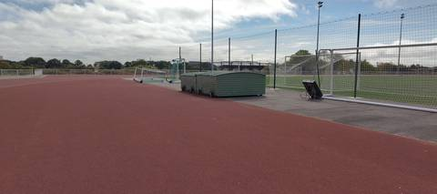
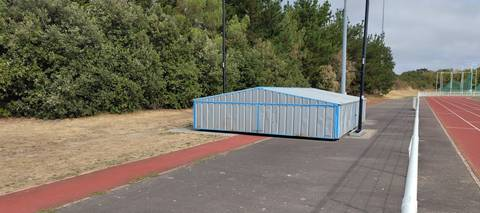
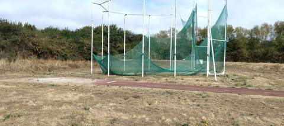

{kind=link}
{kind=link}
{kind=link}
{kind=link}
{kind=link}
{kind=link}
Très belle piste. Tous les agrès sont là et en état : sautoir en longueur, perche, hauteur, aire de lancer du poids, et une cage pour le disque et le marteau. Anneau synthétique 400 m avec terrain engazonné au centre, éclairage en place.
Centre Sportif du Val Saint Martin
Val Saint Martin, 44210 Pornic · Loire-Atlantique
Centre Sportif du Val Saint Martin is an athletics venue in Pornic (Loire-Atlantique), Pays de la Loire, France. It has a 400 m synthetic (tartan) running track. It also offers long jump pit, high jump area, pole vault, shot put, discus and hammer throw. The venue provides floodlighting, changing rooms and showers. The venue is open to the public at set times.
Photos






A photo is surely still missing
Jump pits and throwing areas are what public data describes worst, and what gets photographed least. A close-up of the ground, a covered vault pit, a sand box gone to weeds: each adds what no field carries.
Send a photoNo GitHub account?Track
- Surface
- Synthetic (tartan)
- Lap length
- 400 m
- Track type
- Athletics stadium oval
- Setting
- Outdoor
- Opened
- 2002
Recorded facilities
- Long jump pit
- High jump area
- Pole vault
- Shot put
- Discus
- Hammer throw
Access & amenities
- Free access
- Open to the public (set hours)
- Floodlighting
- Yes
- Changing rooms
- Yes
- Showers
- Yes
- Toilets
- Yes
Athlete reviews
Other venues in the department
- Gymnase Municipal J. Girard
- Complexe sportif Joséphine Baker (Le Clion-sur-Mer)
- Complexe de la Viauderie
- Terrain des Loisirs
- Complexe Sportif du Parc du Grand Fay
- Complexe sportif Mickaël Landreau (Arthon-en-Retz)
Report an error or complete this record
Réf. I441310030 · Source: Data ES + community — Data ES, French ministry for sport, Licence Ouverte 2.0. Records are self-declared and may be incomplete: check access conditions before travelling.